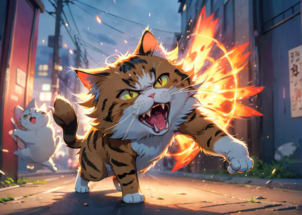
猫を新しい環境に慣らすためには、愛情と忍耐が必要です。不可能ではありません。時間を掛けて猫との絆を深める方法を見ていきましょう。
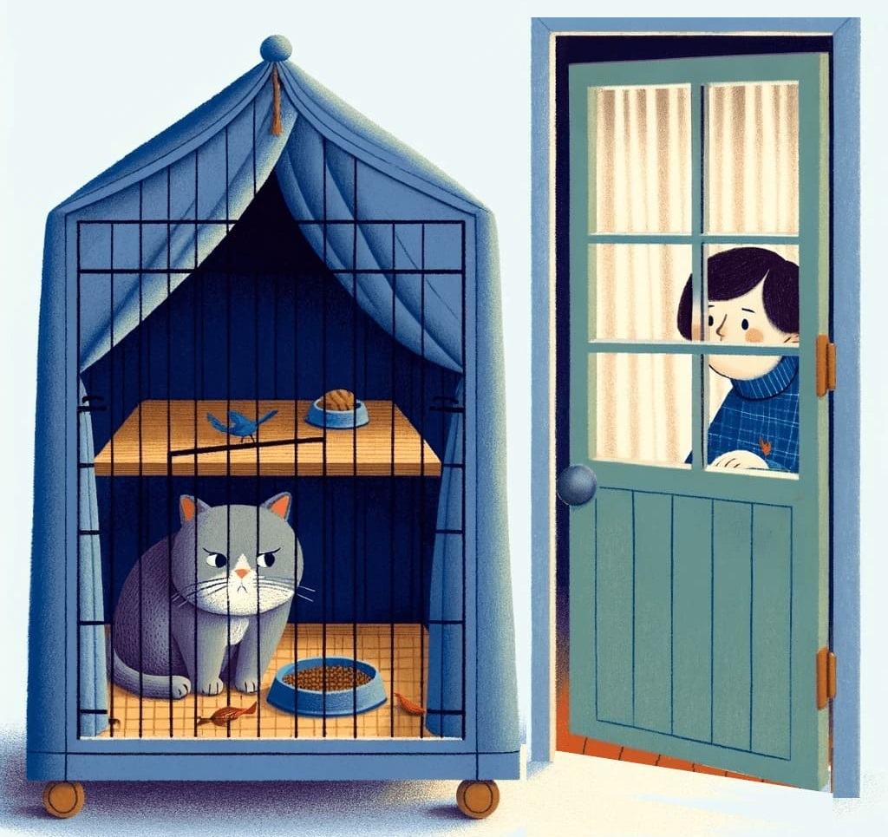
猫が別の部屋に逃げてしまうと、再捕獲が難しくなり、猫にさらなる恐怖を与えかねません。そのため、ケージの開閉は、窓や他の部屋への扉が全て閉まっていることを確認する癖をつけましょう。
人の気配を感じると食事を摂らない事があるため、別室でケージを覆って少し暗くしてやると、安心だと認識してもらえる場合があります。
温度管理にも注意し、2日以上食べない場合は最寄りの動物病院に相談してください。
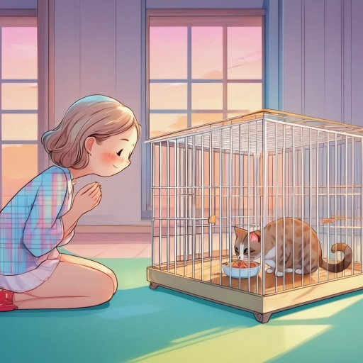
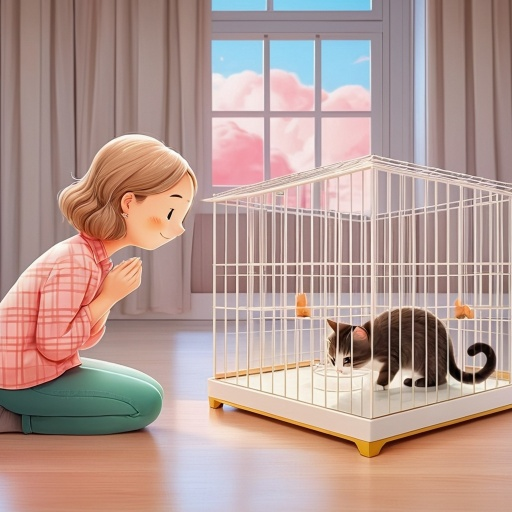
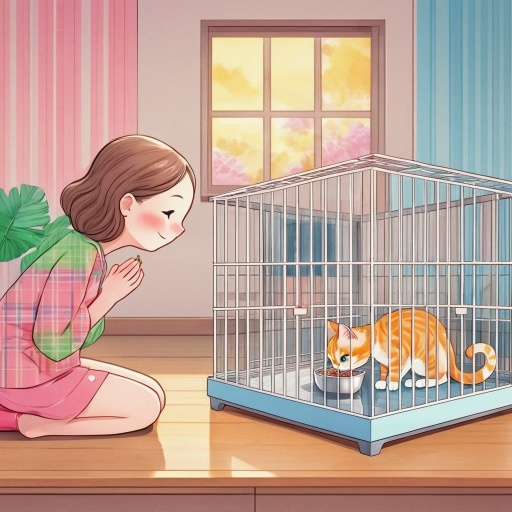
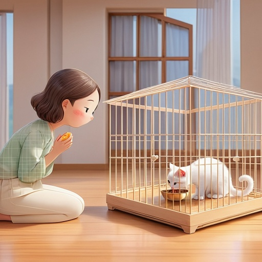
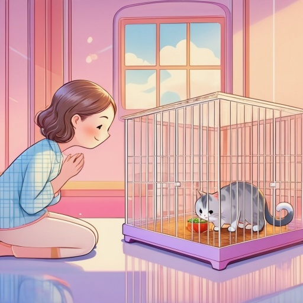
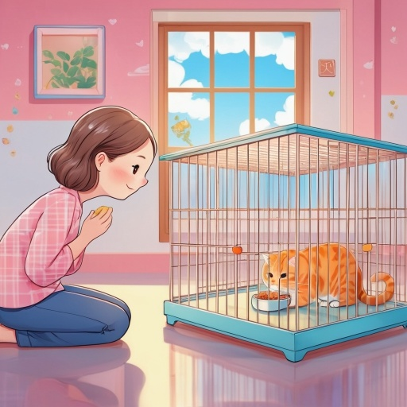
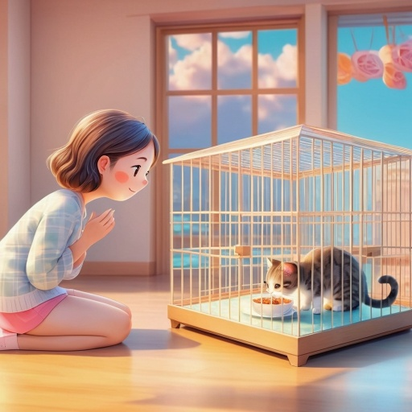
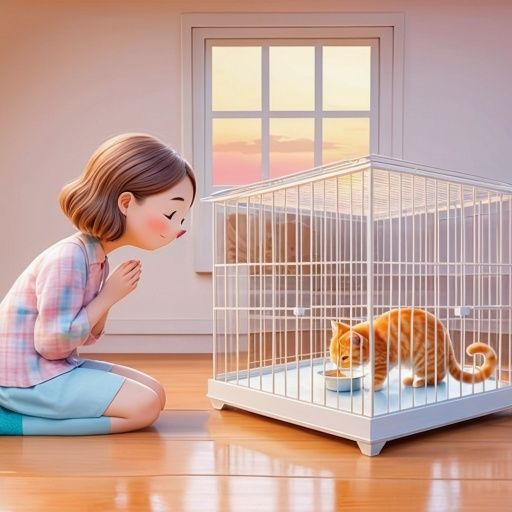
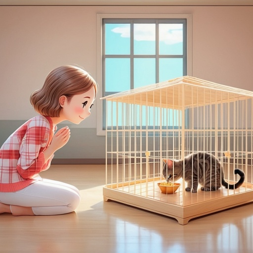
食事が安定し排尿排便も問題なく確認できたら、ケージの覆いを減らし、猫を人と同じ空間で過ごす訓練を始めましょう。視線を気にせず食事を摂れていれば猫が馴れてきた証拠です。
猫がこちらを見ていたら、敵意のないアイコンタクトとしてゆっくり目を閉じてみてください。
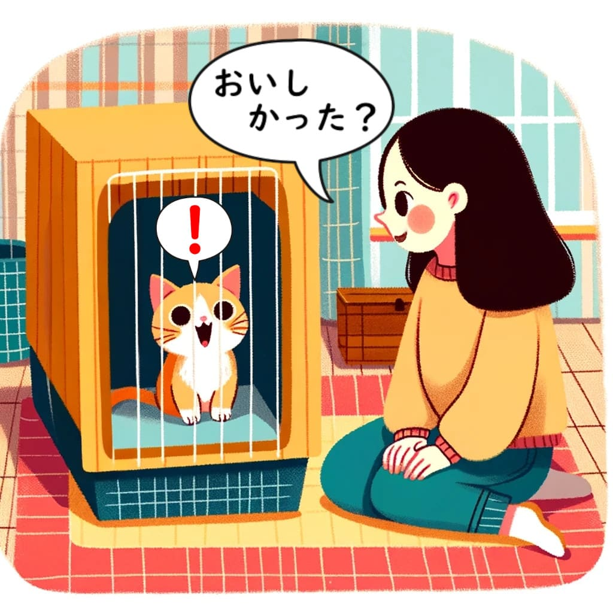
猫が安心して食事を摂れるようになったら、優しく話しかけてみましょう。猫の反応は得られないかもしれませんが、声をかけられることが無害であることを覚えて貰いましょう。
また猫が鳴いたら、優しく返事してみましょう。以降のステップをいくらか短縮できるかもしれません。猫は信頼している相手にしか鳴かないのです。
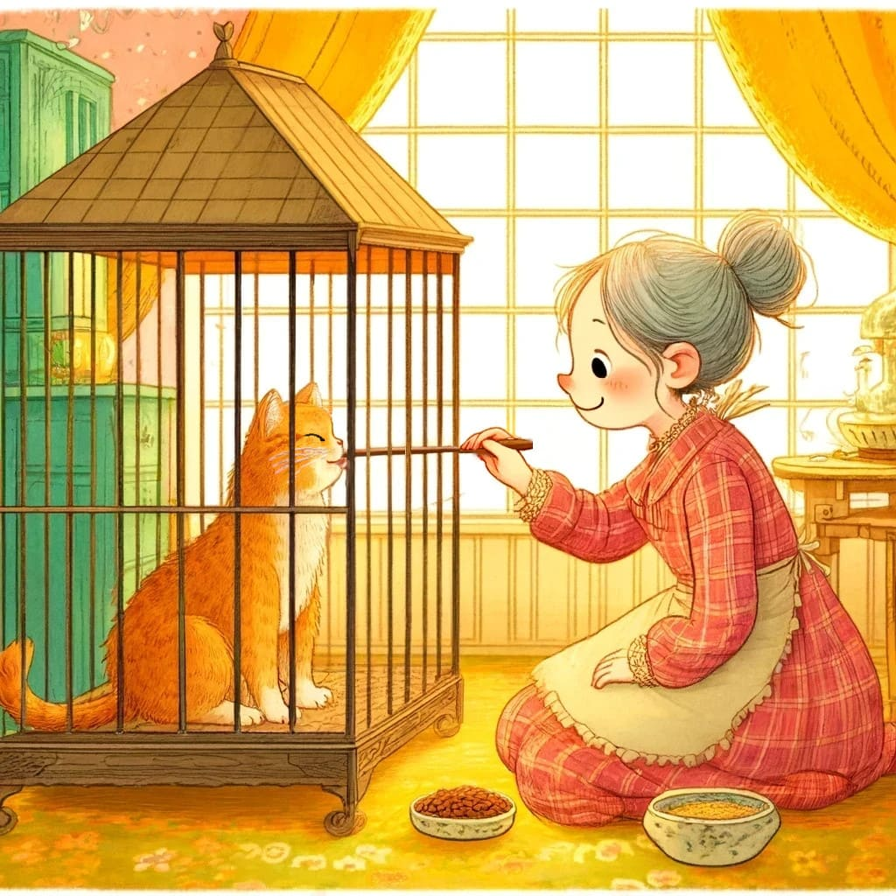
孫の手や撫で用ブラシを使えば先端にチュールを付けて食べさせる事も出来ます。更にそれらを使えば頭を撫でる事もできる筈です。
最初は怒っていますが、害が無いと分かれば徐々に慣れてくるでしょう。
直接手で触る場合は噛まれる危険があるためケージ越しに、まずは下半身側を触る訓練から始めます。
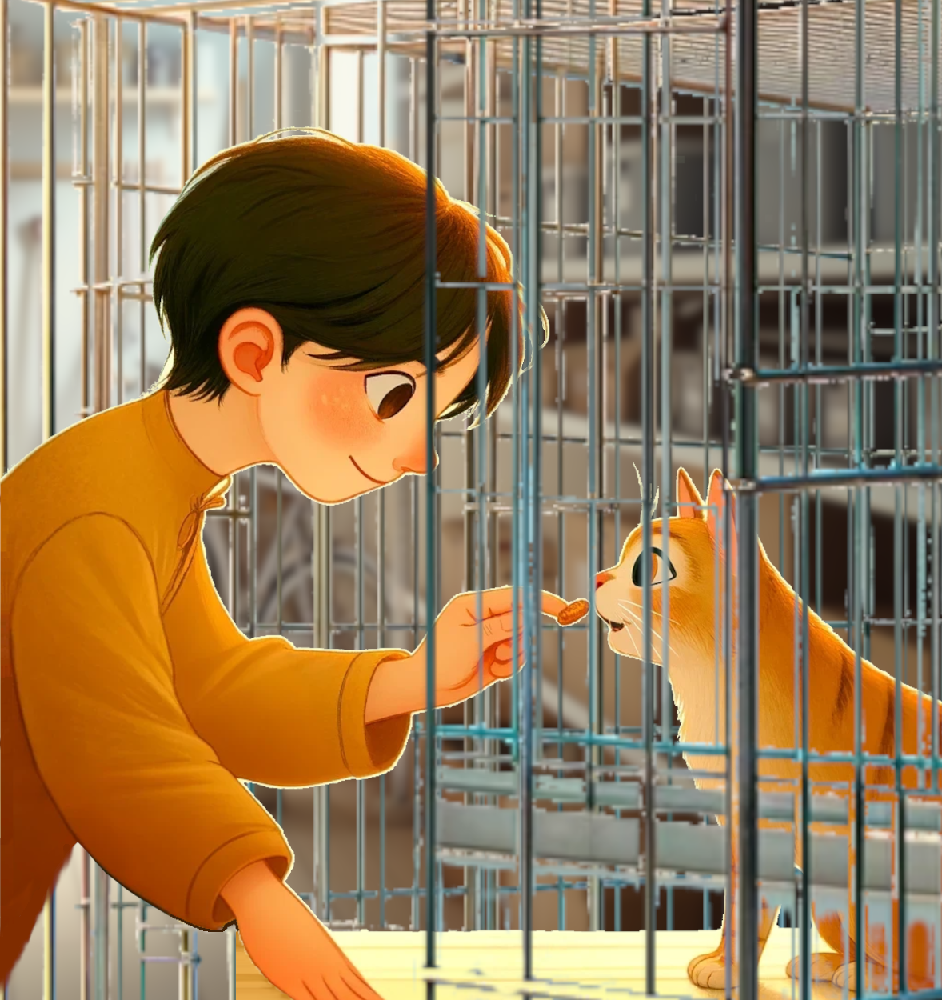
ケージ越しにお尻側を触って怒らなくなってきたら、孫の手や撫で用ブラシで与えていたチュールを今度は直接手につけて食べさせる事を試してみます。
これが出来れば食べてる間に顔を触る事が出来るかもしれません。猫が安心していると感じたら徐々に触れる範囲を増やして行きます。
馴れないうちは厚手袋やバスタオルを併用しながらが良いでしょう。
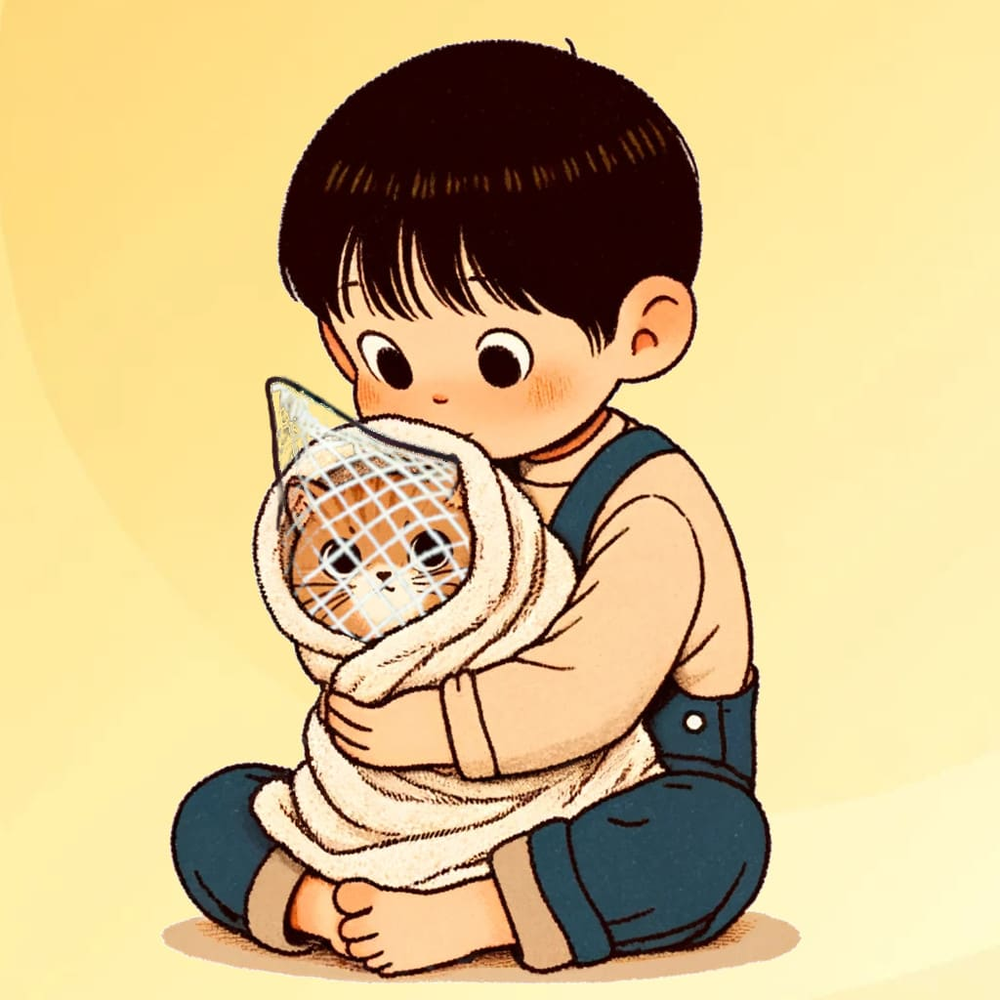
ここから先は上級者向けですが、抱っこを訓練する方法もあります。
ケージ内で洗濯ネットを被せてゆっくりと体を包み込み、全身入れたらケージから出してバスタオルで包んだ状態で撫でてみます。
これに慣れれば直接抱っこできるまでもう少しです。
※ ネット入れタオル巻きは爪切りや投薬にも応用できます。できればマスターしておきたい所ですね。
外に長くいればいるほど馴れにくく、3-4ヶ月齢以上は難易度が高くなる。
置き餌や撒き餌で育つと人前で食べる事に抵抗を感じる様になり、人が居る所では食べなくなってしまう。
人前で食べる猫は警戒心がまだ低い傾向にある(だからと言って油断は禁物)。
子猫の内はメスの方が警戒心が強く馴れづらい。オスは割とちょろい傾向にある。
一方で、一度も人の愛情に触れずにいるとオスでも非常に手強くなる。
| ～500g | 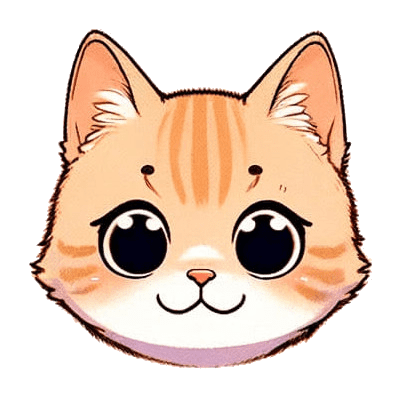 |
ちょろい | ちょろい |
| ～1kg | 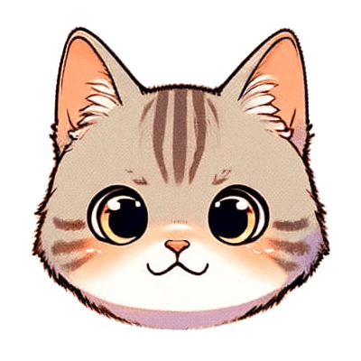 |
引っ掻かれたり噛まれたりするかも知れないが大体の人は可能。 | 引っ掻かれたり噛まれたりするかも知れないが大体の人は可能。 |
| ～1.5kg | 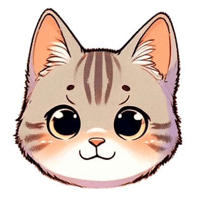 |
そこそこ危なくなってくるので、バスタオルや厚手袋が必要。 | そこそこ危なくなってくるので、バスタオルや厚手袋が必要。 |
| ～2kg | 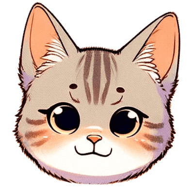 |
脱走時のタモ(大きい魚網)があった方が良い。結構きついが一般的なボランティアレベルなら可。初心者にはキツイ。 | 脱走時のタモ(大きい魚網)があった方が良い。結構きついが一般的なボランティアレベルなら可。初心者にはキツイ。 |
| ～3kg | 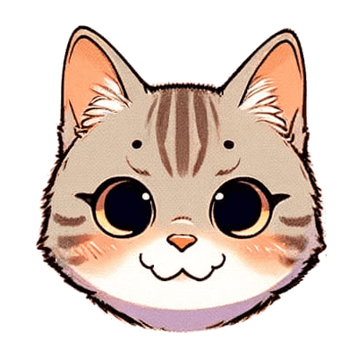 |
中〜上級者レベル コツや方法を知っていれば可。 忍耐が無いと駄目。心の余裕を。 | 中〜上級者レベル コツや方法を知っていれば可。 忍耐が無いと駄目。心の余裕を。 |
| 3～5kg | 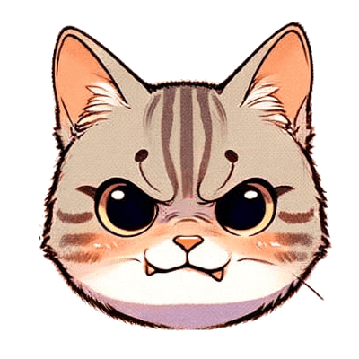 |
上級者も普通に大怪我を警戒。ケージの入れ替えは2人掛かりで。 | 上級者も普通に大怪我を警戒。ケージの入れ替えは2人掛かりで。 |
| 5kg～ | 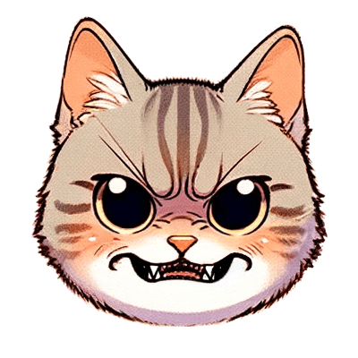 |
ここから先は大体オスの世界。メスの野良はほぼいない。 | ここから先は大体オスの世界。メスの野良はほぼいない。 |
| 7kg～ | 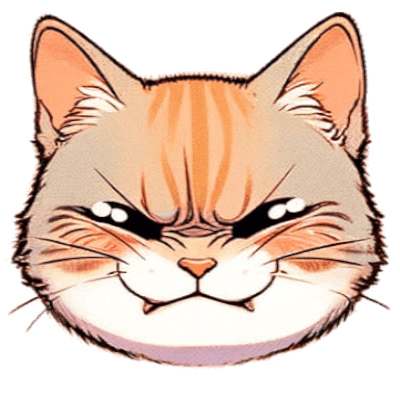 |
レベルMAX。達人でも大怪我するレベル。もうビーストマスター…と思いきやここまで巨大だと体格を維持するのに人の餌付けが不可欠になってくるので、意外と馴れている事も… | レベルMAX。達人でも大怪我するレベル。もうビーストマスター…と思いきやここまで巨大だと体格を維持するのに人の餌付けが不可欠になってくるので、意外と馴れている事も… |
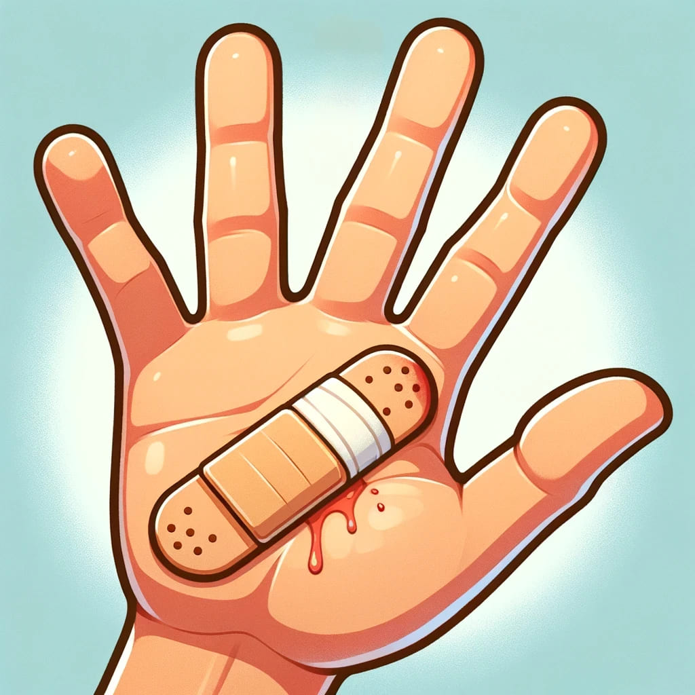
噛み傷は引っかき傷より見た目の範囲は小さいですが、雑菌が深く入るため、腫れや化膿が続くことがあります。
噛まれた場合は、患部を水でよく洗い、病院を受診してください。
その他、体調不良があったら病院へ。
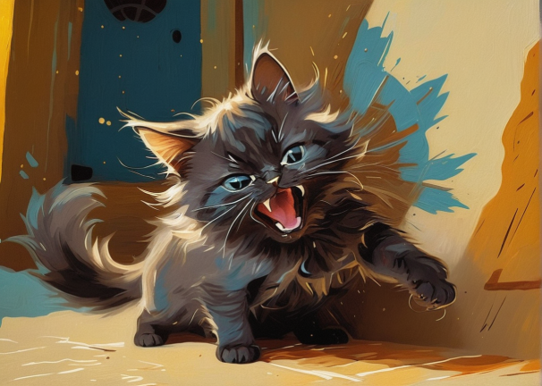